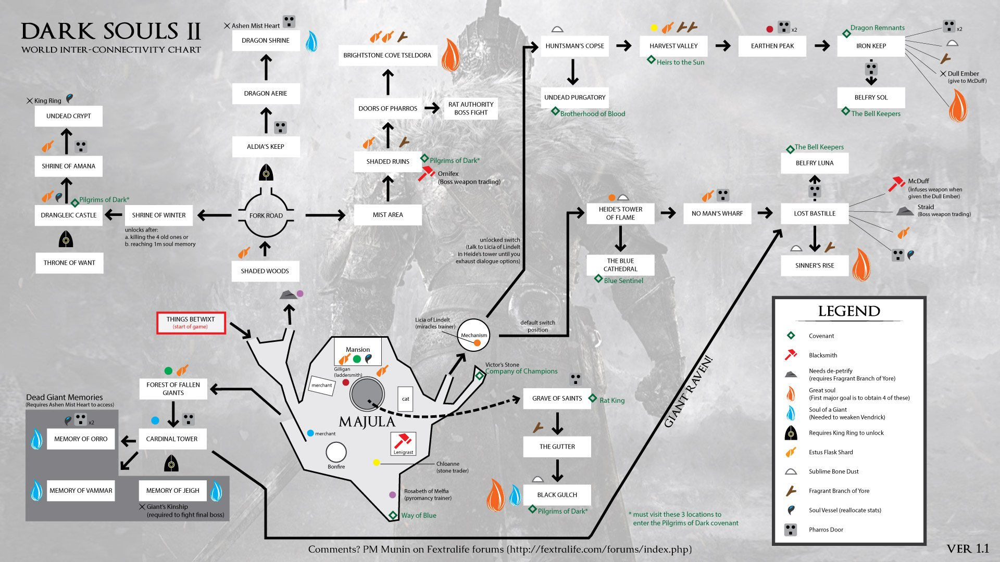

Altar Encantado (Things Betwix)
Majula
Floresta dos Gigantes Caídos (Forest of Fallen Giants)
Torre das Chamas de Heide (Heide's Tower of Flame)
Catedral dos Azuis (Cathedral of Blue)
Cais de Ninguém (No-Man's Wharf)
A Bastilha Perdida (Lost Bastille)
Campanário Luna (Belfry Luna)
Elevação dos Pecadores (Sinner's Rise)
Souto do Caçador (Huntsman's Copse)
Purgatório dos Mortos-Vivos (Undead Purgatory)
Vale da Colheita (Harvest Valley)
Pico Terroso (Earthen Peak)
Masmorra de Ferro (Iron Keep)
Campanário Sol (Belfry Sol)
Túmulo de Santos (Grave of Saints)
A Sarjeta (The Gutter)
Ravina Negra (Black Gulch)
Bosques Sombrios (Shaded Woods)
Portas de Pharros (Doors of Pharros)
Enseada Pedra Luzente Tseldora (Brightstone Cove Tseldora)
>Câmara Privada do Lorde (Lord's Private Chamber)
Santuário de Inverno (Shrine of Winter)
Castelo Drangleic (Drangleic Castle)
Santuário de Amana (Shrine of Amana)
Cripta dos Mortos-Vivos (Undead Crypt)
Masmorra de Aldia (Aldia's Keep)
Ninho de Dragões (Dragon Aerie)
Santuário de Dragões (Dragon Shrine)
Abismo Negro de Outrora (Dark Chasm of Old)
Memória de Vammar (Memory of Vammar)
Memória de Orro (Memory of Orro)
Memória de Jeigh (Memory of Jeigh)
Dragon Memories (Memórias dos Dragões)
Santuário da Carência (Throne Of Want)
